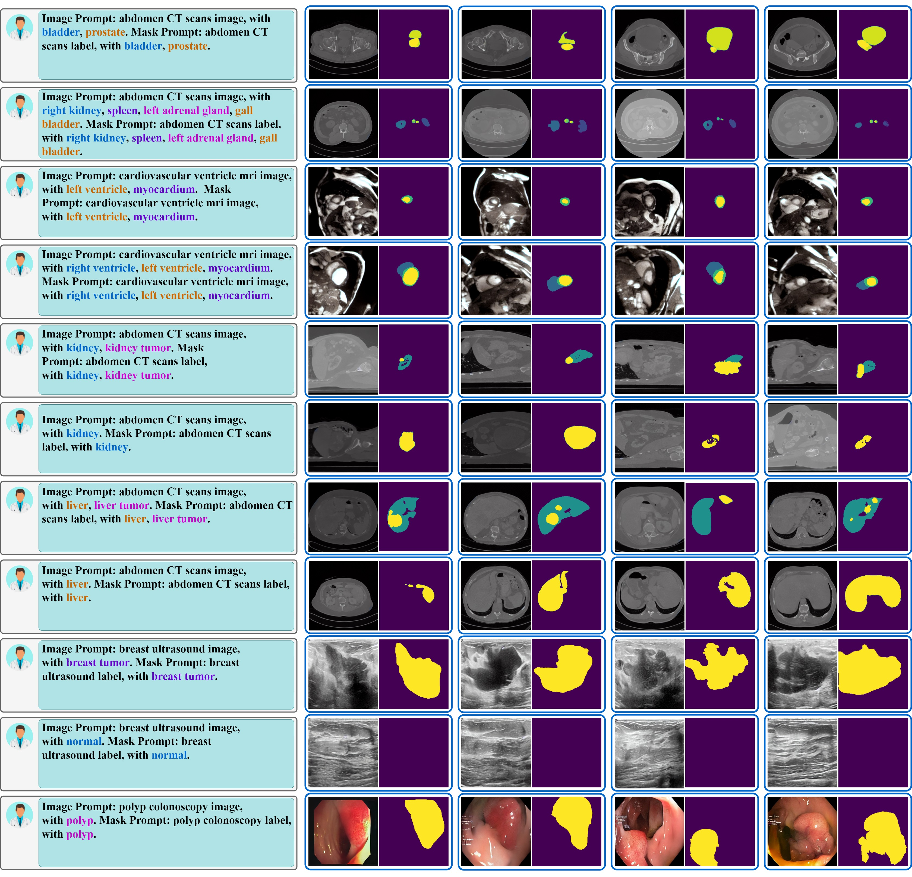

Abstract
This paper presents MedSegFactory, a versatile medical synthesis framework trained across multiple modalities and tasks. The core of MedSegFactory is a dual-stream diffusion model, where one stream synthesizes medical images and the other generates corresponding segmentation masks. To ensure precise alignment between image-mask pairs, we introduce Joint Cross-Attention (JCA), enabling a collaborative denoising paradigm by dynamic cross-conditioning between streams. This bidirectional interaction allows both representations to guide each other's generation, enhancing consistency between generated pairs. MedSegFactory unlocks on-demand generation of paired medical images and segmentation masks through user-defined prompts that specify the target labels, imaging modalities, anatomical regions, and pathological conditions, facilitating scalable and high-quality data generation. This new paradigm of medical image synthesis enables seamless integration into diverse medical imaging workflows, enhancing both efficiency and accuracy. Extensive experiments show that MedSegFactory generates data of superior quality and usability, achieving competitive or state-of-the-art performance in 2D and 3D segmentation tasks while addressing data scarcity and regulatory constraints.
MedSegFactory Pipeline
Overview of the MedSegFactory Training Pipeline. Left: A dual-stream generation framework built upon the Stable Diffusion model, where each paired image and segmentation mask \(\{x_{i}, m_{i}\}\) are first encoded into latent representations and noised. These noised representations are then denoised by the Diffusion U-Net, producing the image and segmentation mask latent \(\{\hat{z}_{0}, \hat{y}_{0}\}\), which are ultimately decoded into a paired image and mask \(\{\hat{x}_{i}, \hat{m}_{i}\}\). To improve their semantic consistency, we introduce Joint Cross-Attention (JCA), which allows the denoised latent representations of both streams to act as dynamic conditions, enhancing the mutual generation of images and masks. Right: A detailed illustration of JCA, which applies two cross-attention functions to the intermediate denoising features \(\{z_{t}, y_{t}\}\), enabling the cross-conditioning of the medical image and segmentation label for improved consistency in the final outputs.
Quality
Qualitative comparison between MedSegFactory and baselines for medical image generation. Baselines exhibit issues: irregular structures (SDM, ControlNet, DiffBoost, Finetuned-SDM), artifacts (SDM, DiffBoost, Finetuned-SDM), blurred boundaries (Finetuned-SDM), unnatural saturation (ControlNet, DiffBoost), and structural missing (MAISI). In contrast, MedSegFactory produces anatomically accurate, high-quality images.
Alignment
Alignment comparison reveals misalignment or detail loss in baseline-generated medical images versus segmentation labels (highlighted in red box.). MedSegFactory demonstrates superior alignment and finer details.
More Examples
MedSegFactory produces high-quality paired medical images and segmentation labels, precisely following given instructions while demonstrating diversity across multiple outputs under the same conditions.

BibTeX
If you find our work helpful for your research, please consider giving a citation üìÉ
@misc{mao2024story_adapter,
title={{Story-Adapter: A Training-free Iterative Framework for Long Story Visualization}},
author={Mao, Jiawei and Huang, Xiaoke and Xie, Yunfei and Chang, Yuanqi and Hui, Mude and Xu, Bingjie and Zhou, Yuyin},
journal={arXiv},
volume={abs/2410.06244},
year={2024},
}